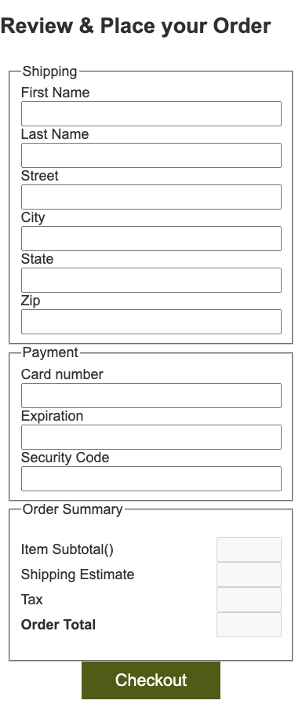

The next step for our site is to build out the checkout process.
Instructions
Complete the following assignment as a team. Designate one team member
as the "main driver" and collaborate on their copy of the code.
Everyone on the team should be actively engaged in writing the code
and contributing to the solution. Once the solution is working, make
sure that everyone on the team gets a copy of the code. Each week let
someone else be the "main driver" of the coding.
Core Requirements
The driver should visit the team's copy of the Trello board for
the project. Add each of the attending team members to the
"Team6: Checkout" task...then move it to 'Doing'. Read the
details of the card together.
The driver should make sure to pull any changes from
Github before proceeding. Next they should create a new branch
called initials--team6. So if the driver's name were
John Doe the branch should be called jd--team6
The Cart
Check your cart page to make sure that it is correctly
displaying a total. If it is not then someone in your group
should really complete that card in Trello. :)
Add a Checkout button/link that will take us to the
checkout page.
Checkout page
Next we need to build a form on the checkout page to gather the
required information from our users. We will need the following:
Customer Name
Address (we will assume billing and shipping are the same)
Credit card number, expiration date, and security code.
Submit button
The form should not submit unless all of the fields are filled
out. You should also show an order summary on this page. An
example of what this page could look like is below.

Notice that the last section is just displaying that
information, but not in inputs. We need that information to be
sent to the server, but we don't want the users to be able to
edit that themselves! In the function that prepares the data to
send to the server that we will write we will need to add those
totals back in.
In a real site the server should verify the totals as well to
make sure that the user doesn't try anything funny.
Order summary
We need to fill in the information in the summary section. the
Item Subtotal will come from the items in the cart, and then we
need to add Tax and shipping costs and calculate the order
total. Once the user supplies a zip code you should calculate
both shipping and tax and display it in the order summary to the
user.
Normally tax and shipping would be calculated according to the
destination address. There would be a look up process that
would figure out the right values to use. To keep ours simple
we will use the same formulas for all orders.
Tax
Use 6% for sales tax.
Shipping
Use $10 for the first item plus $2 for each additional item
for shipping.
Create a CheckoutProcess module, and add a method
to calculate and display the item subtotal. This should get
called when the page loads.
Then create a second method to calculate and display shipping,
tax, and order total. This method should get called after the
user fills in the Zip code.
Refactor ProductData
We will use the same server we used last week to pull the
products from for submitting our orders, but a different
endpoint. The URL should be:
http://157.201.228.93:2992/checkout
Because we need to send the order information we will need to
make a POST request to the server instead of the
GET request we have been using.
We are already making requests to this server for product data
through our ProductData module. This would be the
logical place to add the functionality to submit an order. The
name "ProductData" becomes less descriptive of what is going on
in the module now however. It would probably be better with the
name ExternalServices. That is more descriptive.
Refactor your code to make this change.
If you panicked a bit when you read that you are paying
attention. Renaming something that you have already used in
multiple places is not something to do lightly, but sometimes
it is necessary. Because of this good development tools will
have built in ways to help you. VS Code is a good tool.
Commit and push your changes before proceeding. That will make
it easy to revert if something goes wrong :)
Open productData.js and select the word
ProductData in the class definition. Right click
on it and select "Rename symbol" in the menu.
Enter 'ExternalServices' and hold down the shift key while
hitting enter/return. This will preview the changes. It should
open up a new panel in the editor where it will show you
everywhere it found the name that you want to change. If you
left-click on one of the lines it will open the file side by
side with how it was before the changes and how it will be
after. Review each change. If the changes looks good then
right-click on the same line in the Preview panel and select
'apply Refactoring'. Then go File->Save All
Next we need to adjust the filename of the module so that it
reflects the change. If you right-click on the file in the
file explorer in VS Code and select rename there...you should
get a popup message that asks if you want to rename the
imports as well. Say yes! File->Save All again
Finally just to make sure nothing was missed...on the side of
your VsCode window click on the magnifying glass icon
(ctrl/cmd + shift + F). Type ProductData and if
there are any more instances change them.
Test the product list and product detail pages to make sure
they still work!
Submit the order
Add a new method to our newly renamed
ExternalServices class. Call it checkout.
It should accept an object that represents our order. The object
should look like the following (order does not matter):
{
orderDate: '2021-01-27T18:18:26.095Z',
fname: "John",
lname: "Doe",
street: "123 Main",
city: "Rexburg",
state: "ID",
zip: "83440",
cardNumber: "1234123412341234",
expiration: "8/21",
code: "123",
items: [{
id: "20CXG"
name: "The North Face Pivoter 27 L Backpack"
price: 39.99,
quantity: 1
}, {
id: "14GVF",
name: "Marmot 5°F Rampart Down Sleeping Bag - 650 Fill, Mummy (For Men and Women)",
price: 229.99,
quantity: 1
}],
orderTotal: "298.18",
shipping: 12,
tax: "16.20"
}
Use 1234123412341234 for the card number,
123 for the security code, and any expiration in the
future if you want your order to succeed.
For testing to save you time and typing remember that you can
set the value="" property of an html input
element...just remember to remove your defaults once everything
is working.
The method should POST that object You will need to create a
custom options object and pass it in with your fetch. (remember
to stringify your object before sending it!) to the address
above (http://157.201.228.93:2992/checkout) and return the
server response. The response will be JSON.
All of the requests we have made this far have been fairly
simple and the default settings for fetch have been
sufficient. The defaults will not work for us here. Fetch has
an optional second argument that is for options. An options
object that will work for use here is below:
You will also need to add a method in
CheckoutProcess that will get called when the
checkout button is clicked. It should prepare the order data
object, and then call ExternalServices.checkout.
When you attach the listener to the checkout button you will
probably want to keep the form from doing what it would
normally do on submit. You can do this by calling
event.preventDefault() in the listener function.
You can consider this activity completed when you receive a
response from your POST to the server. Next week the team
activity will continue this by handling the success and failure
responses appropriately.
Instructors Solution
As a part of this team activity, you are expected to look over a
solution from the instructor, to compare your approach to that one.
One of the questions on the I-Learn submission will ask you to provide
insights from this comparison.
Please DO NOT open the solution until you have worked through this
activity as a team for the one hour period. At the end of the hour, if
you are still struggling with some of the core requirements, you are
welcome to view the instructor's solution and use it to help you
complete your own code. Even if you use the instructor's code to help
you, you are welcome to report that you finished the core
requirements, if you code them up yourself.
After you have completed what you can, and reviewed the instructor's
solution, the driver should commit and push their changes, then submit
a pull request for this branch. Then review the pull request as a
team, close it, and merge the branch back into Main. Finally someone
should move the Trello card to "Done".
Submission
When you have finished this activity, please fill out the assessment
in I-Learn. You are welcome to complete any additional parts of this
activity by yourself or with others after your meeting before
submitting the assessment.